TRỤC ĐIỆN TIM VÀ VÙNG CHUYỂN TIẾP
3.1. TRỤC ĐIỆN TIM
Trục điện học (QRS) của tim
Khử cực tâm thất
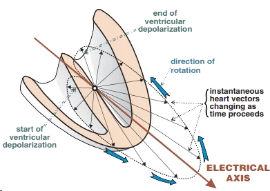
- Cơ tâm thất khử cực dần dần
- Khử cực tạo ra một vector điện học
- Vector này được thu nhận bởi các chuyển đạo ECG
- Càng nhiều tế bào cơ tim khử cực
- Vector điện học tạo ra càng lớn
- Vector điện tổng hợp (summation electrical vector)
- Mỗi tế bào cơ tim tạo ra một vector trong quá trình khử cực
- Hướng chung của các vector trong quá trình khử cực
- Được gọi là vector điện tổng hợp
- Vector tổng hợp của thất trái:
- Là hướng tổng hợp của các vector khử cực
- Của toàn bộ tế bào cơ tim ở thất trái
- Là vector lớn nhất
- Vì nó liên quan tới sự khử cực của khối cơ tim lớn nhất
- Hướng của nó quyết định trục điện tim
- Là hướng tổng hợp của các vector khử cực
- Vector tổng hợp trong quá trình khử cực tâm thất
- Quay quanh trung tâm điện học của tim
- (cực trung tâm Wilson — Wilson's central terminal)
- Quay quanh trung tâm điện học của tim
Trục điện tim
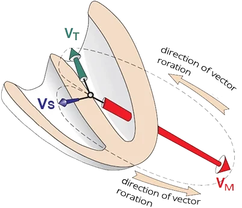
- Hai tâm thất khử cực dần dần
- Đầu tiên, vách liên thất mỏng được hoạt hoá
- Tạo ra vector vách nhỏ (VS)
- Sóng Q
- Tiếp theo, thất trái đồ sộ được hoạt hoá
- Tạo ra vector chính lớn (VH)
- Đồng thời, thất phải mỏng cũng được hoạt hoá
- Vector thất phải nhỏ
- Không ảnh hưởng tới hướng của vector chính
- Sóng R
- Cuối cùng, đáy thất trái được hoạt hoá
- Tạo ra vector tận nhỏ (VT)
- Sóng S
- Cần hình dung các vector trong không gian ba chiều
- Các chuyển đạo ECG ghi lại các vector theo thời gian
- Vector điện học của thất trái
- Là vector lớn nhất
- Được gọi là vector tim chính (main cardiac vector)
- Hướng của nó quyết định trục điện tim
Các chuyển đạo ECG
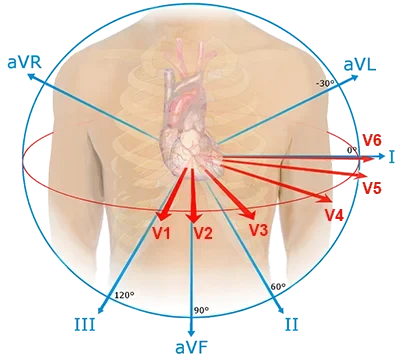
- Một bản ghi ECG có 12 chuyển đạo
- Chuyển đạo chi (I, II, III, aVF, aVL, aVR)
- Chuyển đạo trước tim (V1-V6)
- Mỗi chuyển đạo "nhìn" các vector từ một góc khác nhau
- Các chuyển đạo "nhìn" về trung tâm điện học của tim
- Tại cực trung tâm Wilson
- Nếu vector điện học hướng
- Về phía chuyển đạo trên bề mặt - xuất hiện sóng lệch dương
- Ra xa chuyển đạo trên bề mặt - xuất hiện sóng lệch âm
Các chuyển đạo chi
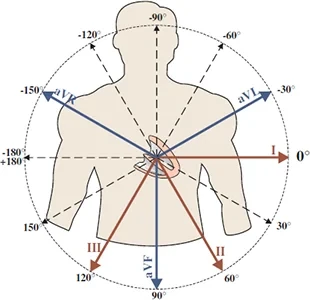
- Chúng "nhìn" tim ở mặt phẳng trán
- Mỗi chuyển đạo có một điểm nút khác nhau
- Hướng của tất cả các chuyển đạo đều xuất phát từ trung tâm điện học của tim
- Từ cực trung tâm Wilson
- Trục điện tim
- Là hướng của vector chính ở mặt phẳng trán
- Chỉ được xác định bằng các chuyển đạo chi:
- (I, II, III, aVF, aVR, aVL)
Trục điện học của các chuyển đạo ECG
- Mỗi chuyển đạo ECG có trục điện học riêng
- Nằm giữa cực trung tâm (-) và điện cực bề mặt (+)
- Vector tim chính chiếu lên trục điện học của tất cả các chuyển đạo ECG
- Mỗi vector điện học của tim đều chiếu lên trục điện học của các chuyển đạo ECG
- Tuy nhiên, trục tim chỉ được quyết định bởi vector điện chính (từ quá trình khử cực của thất trái)
- Mỗi vector điện học của tim đều chiếu lên trục điện học của các chuyển đạo ECG
- Khi xác định trục điện tim, ta chỉ xét
- Các chuyển đạo chi (I, II, III, aVF, aVR, aVL)
Sóng lệch dương và sóng lệch âm trên ECG
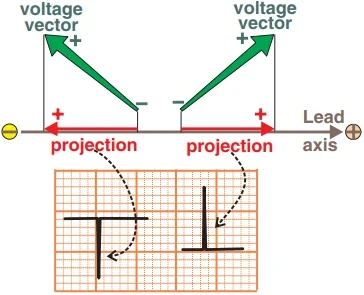
- Vector điện học của tim
- Luôn phải chiếu lên trục điện học của chuyển đạo ECG
- Sóng lệch dương trên ECG xuất hiện
- Nếu vector hướng về phía điện cực bề mặt (+)
- Sóng lệch âm trên ECG xuất hiện
- Nếu vector hướng ra xa điện cực bề mặt (+)
Độ lớn của sóng lệch trên ECG
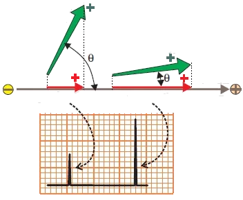
- Độ lớn của sóng lệch trên ECG
- Phụ thuộc vào góc giữa vector và trục của chuyển đạo ECG
- Góc càng nhỏ
- Vector càng hướng thẳng về phía điện cực (+)
Sóng lệch đẳng điện trên ECG
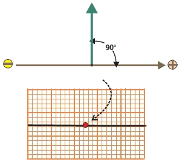
- Nếu vector vuông góc với trục điện học của chuyển đạo
- Thì không xuất hiện sóng lệch nào trên ECG
- Tuy nhiên, vector điện học được "nhìn" bởi 6 chuyển đạo chi
- Mỗi chuyển đạo ECG có một hướng trục điện học khác nhau
- Cùng một vector không bao giờ đẳng điện ở tất cả các chuyển đạo
Mặt phẳng trung tính
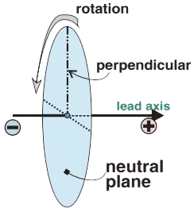
- Khi một vector điện học vuông góc
- Được quay trong không gian ba chiều quanh trục điện học của chuyển đạo
- Nó tạo ra mặt phẳng trung tính của chuyển đạo ECG đó
- Mọi vector nằm trong mặt phẳng trung tính
- Đều chiếu lên trục điện học của chuyển đạo ECG thành một điểm duy nhất
- Không xuất hiện sóng lệch nào trên ECG
Bán cầu dương và bán cầu âm của các chuyển đạo ECG
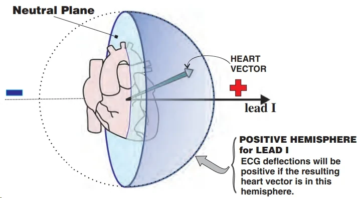
Mặt phẳng trung tính của chuyển đạo I
- Mỗi chuyển đạo ECG có bán cầu dương và bán cầu âm riêng
- Bán cầu dương
- Mọi vector hướng từ mặt phẳng trung tính về phía điện cực (+) của chuyển đạo ECG
- Sẽ tạo ra sóng lệch dương
- Bán cầu âm
- Mọi vector hướng từ mặt phẳng trung tính ra xa điện cực (+) của chuyển đạo ECG
- Sẽ tạo ra sóng lệch âm trên ECG
- Bán cầu dương
- Mặt phẳng trung tính
- Nằm trên trục điện học của chuyển đạo ECG, nơi vector tim chính bắt đầu chiếu lên
- Không phải lúc nào cũng trùng với trung tâm điện học của tim
- Mỗi chuyển đạo chi (I, II, III, aVF, aVL, aVR)
- Đều có bán cầu dương và bán cầu âm riêng
- Mặt phẳng trung tính luôn vuông góc với trục điện học của chuyển đạo ECG tương ứng
- Nằm trên trục điện học của chuyển đạo ECG, nơi vector tim chính bắt đầu chiếu lên
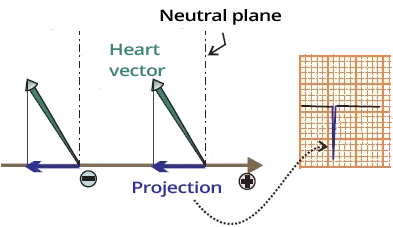
Bán cầu âm và sóng lệch âm
- Sóng lệch âm xuất hiện
- Bất cứ khi nào vector hướng ra xa điện cực (+)
- Trục điện học của chuyển đạo kéo dài vượt qua trung tâm điện học của tim (-)
- Độ lớn của sóng lệch
- Phụ thuộc vào độ lớn của vector được chiếu lên trục điện học của chuyển đạo ECG
- Không phụ thuộc vào khoảng cách từ vector tới điện cực (+)
- Cả hai vector trong hình đều tạo ra sóng lệch ECG như nhau
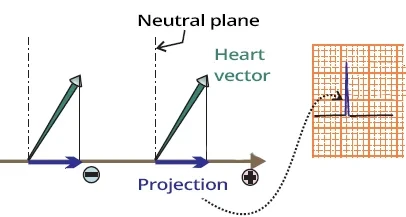
Bán cầu dương và sóng lệch dương
- Sóng lệch dương xuất hiện
- Bất cứ khi nào vector hướng về phía điện cực (+)
- Trục điện học của chuyển đạo kéo dài vượt qua trung tâm điện học của tim (-)
- Cả hai vector trong hình đều tạo ra sóng lệch ECG như nhau
Phức bộ QRS và trục điện tim
- Trong quá trình khử cực tâm thất, 3 vector chính được tạo thành
- Vector khởi đầu (sóng Q)
- Khử cực vách liên thất
- Vector chính (sóng R)
- Khử cực thất trái
- Vector tận (sóng S)
- Khử cực đáy thất trái
- Vector khởi đầu (sóng Q)
- Các vector được các chuyển đạo ECG "nhìn" đồng thời
- Tuy nhiên, mỗi chuyển đạo "nhìn" các vector từ một góc khác nhau
- Mỗi vector đều được chiếu lên trục điện học của các chuyển đạo ECG
- Trục điện tim được quyết định bởi hướng của vector điện chính
Chuyển đạo I
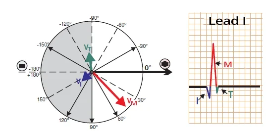
Chuyển đạo chi I
- Nửa hình tròn màu trắng biểu thị bán cầu dương
- Chuyển đạo I "nhìn" các vector từ góc 0°
- Các vector hình thành lần lượt
- Vector vách
- Vector chính (hướng về phía chuyển đạo I)
- Vector tận
Chuyển đạo aVF
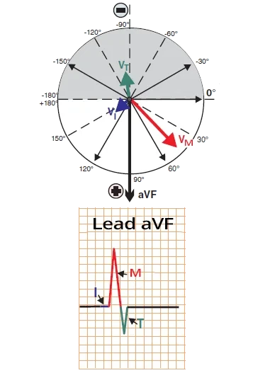
Chuyển đạo chi aVF
- Nửa hình tròn màu trắng biểu thị bán cầu dương
- Chuyển đạo aVF "nhìn" các vector từ góc 90°
- Các vector hình thành lần lượt
- Vector vách (hướng về phía chuyển đạo aVF)
- Vector chính (hướng về phía chuyển đạo aVF)
- Vector tận
Chuyển đạo aVR
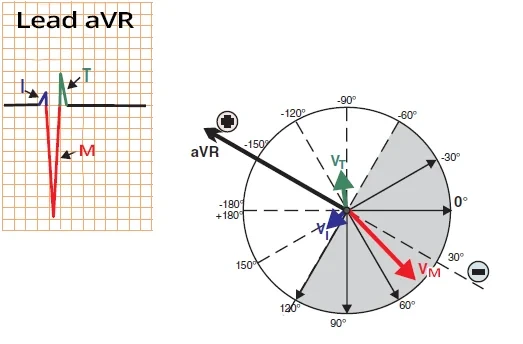
Chuyển đạo chi aVR
- Nửa hình tròn màu trắng biểu thị bán cầu dương
- Chuyển đạo aVR "nhìn" các vector từ góc -150°
- Các vector hình thành lần lượt
- Vector vách
- Vector chính (hướng ra xa chuyển đạo aVR)
- Vector tận
ECG 12 chuyển đạo và vector tim chính
- Vector tim chính tạo ra sóng lệch lớn nhất trên ECG 12 chuyển đạo
- Nếu nó hướng về phía chuyển đạo (sóng R)
- Nếu nó hướng ra xa chuyển đạo (sóng S)
- Trục điện tim được xác định bởi hướng của vector điện chính ở các chuyển đạo chi
- Phức bộ QRS trên ECG thể hiện quá trình khử cực tâm thất
- Ở mỗi chuyển đạo ECG, nó có hình dạng khác nhau
- Vì mỗi chuyển đạo "nhìn" các vector từ một góc khác nhau
- Các vector luôn được chiếu lên trục điện học của từng chuyển đạo ECG
- Các hình minh hoạ quá trình khử cực tâm thất (phức bộ QRS)
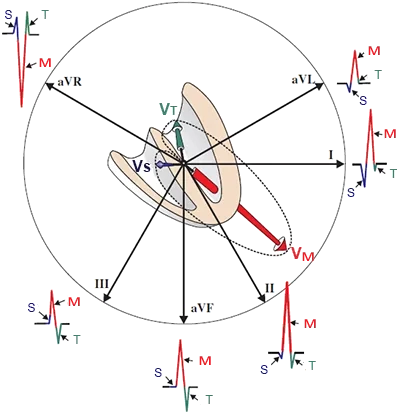
Các chuyển đạo chi
- "nhìn" các vector ở mặt phẳng trán
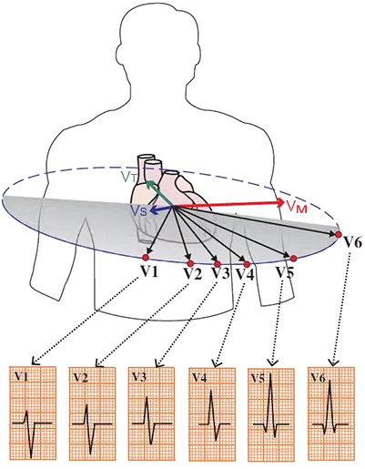
Các chuyển đạo trước tim
- "nhìn" các vector ở mặt phẳng ngang
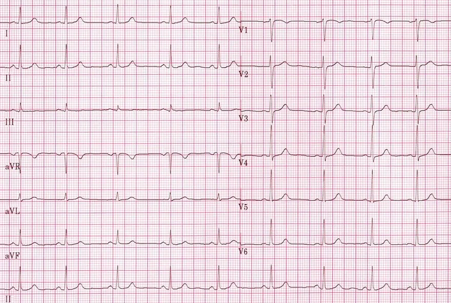
Nhịp xoang
- ECG cho thấy nhịp xoang
- Lưu ý chiều cao của các phức bộ QRS thay đổi ở các chuyển đạo khác nhau
- Các vector tim ở tâm nhĩ tạo ra sóng P
- Các vector tim ở tâm thất tạo ra phức bộ QRS và sóng T
- Vector tim chính tạo ra sóng lệch lớn nhất (sóng R, sóng S)
3.1.1. XÁC ĐỊNH TRỤC ĐIỆN TIM
Cách xác định trục tim
Các chuyển đạo chi
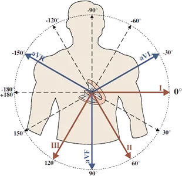
- Các chuyển đạo chi
- Đang "nhìn" tim ở mặt phẳng trán
- Mỗi chuyển đạo có một góc khác nhau
- Tất cả đều xuất phát từ trung tâm điện học của tim
- Từ cực trung tâm Wilson
- Trục điện tim
- Là hướng của vector chính ở mặt phẳng trán
- Chỉ được xác định từ các chuyển đạo chi:
- (I, II, III, aVF, aVR, aVL)
Sóng lệch dương và sóng lệch âm trên ECG
- Vector điện học của tim luôn phải
- Được chiếu lên trục điện học của chuyển đạo ECG
- Sóng lệch dương trên ECG xuất hiện
- Khi vector hướng về phía điện cực bề mặt (+)
- Sóng lệch âm trên ECG xuất hiện
- Khi vector hướng ra xa điện cực bề mặt (+)
Xác định trục điện tim
- Thuật toán xác định trục điện tim gồm 3 bước:
- Trước hết, xác định góc phần tư
- Sau đó, tìm sóng lệch R cao nhất
- Cuối cùng, tìm phức bộ QRS hai pha
1. Xác định góc phần tư (chuyển đạo I, aVF)
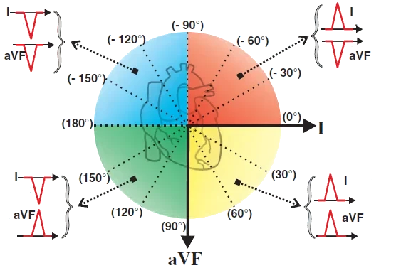
- Các chuyển đạo chi (I, aVF) vuông góc với nhau
- Chúng chia tim thành 4 góc phần tư trong hệ thống lục trục (hexaxial system)
Vector tim chính và 4 góc phần tư
- Vector chính hướng từ trung tâm điện học ra các chuyển đạo chi
- Dựa vào sóng lệch dương hay âm ở các chuyển đạo (I, aVF)
- Có thể xác định vector chính hướng về góc phần tư nào
- Góc phần tư dưới trái (màu vàng)
- Chuyển đạo I và aVF đều dương
- Vì vector chính hướng về phía chuyển đạo I và về phía chuyển đạo aVF
- Góc phần tư trên trái (màu đỏ)
- Chuyển đạo I dương và aVF âm
- Vì vector chính hướng về phía chuyển đạo I và ra xa chuyển đạo aVF
- Góc phần tư dưới phải (màu xanh lá)
- Chuyển đạo I âm và aVF dương
- Vì vector chính hướng ra xa chuyển đạo I và về phía chuyển đạo aVF
- Góc phần tư trên phải (màu xanh dương)
- Chuyển đạo I âm và aVF âm
- Vì vector chính hướng ra xa cả chuyển đạo I lẫn chuyển đạo aVF
2. Sóng R cao nhất (sóng S sâu nhất)
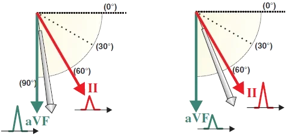
- Sau khi xác định được góc phần tư chứa vector
- Hãy xem chiều cao của sóng R (độ sâu của sóng S)
Độ lớn của sóng R và vector tim chính
- Vector càng hướng thẳng về phía chuyển đạo
- Sóng R càng cao
- Vector càng hướng thẳng ra xa chuyển đạo
- Sóng S càng sâu (sóng S không được thể hiện trong các hình)
- Nếu chiều cao các sóng R bằng nhau
- Thì vector nằm đúng giữa hai chuyển đạo tương ứng
Phức bộ QRS hai pha
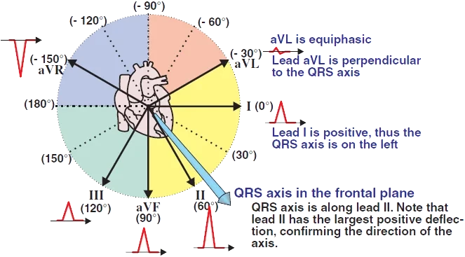
- Cuối cùng, tìm phức bộ QRS hai pha cân bằng (equiphasic — đẳng điện) ở một chuyển đạo nào đó
- Chuyển đạo đó khi ấy vuông góc với vector điện học
Phức bộ QRS hai pha
- Nếu một vector đơn độc vuông góc với chuyển đạo ECG
- Thì sẽ không thấy sóng lệch nào trên ECG
- Tuy nhiên, trong quá trình khử cực tâm thất, nhiều vector khử cực được tạo ra
- Vector thất quay quanh trục trung tâm
- Ta thấy 3 vector tổng hợp chính trên ECG dưới dạng phức bộ QRS
- Phức bộ QRS hai pha
- Xuất hiện ở chuyển đạo gần như vuông góc với vector chính
- Vector chính quay trong không gian ba chiều trong quá trình khử cực tâm thất
- Trong quá trình quay, nó hướng "một chút" VỀ PHÍA và RA XA chuyển đạo vuông góc đó
- QRS hai pha cân bằng (đẳng điện)
- Phức bộ QRS có phần dương và phần âm hoàn toàn bằng nhau
- Chuyển đạo có QRS hai pha cân bằng chính là chuyển đạo vuông góc chính xác với vector chính
- Trục điện học (vector) có thể được xác định với độ chính xác 10°
- Nếu vector hướng đúng vào giữa hai chuyển đạo (ví dụ đúng 45°)
- Thì các chuyển đạo aVL và III sẽ "gần như hai pha cân bằng" (chúng sẽ hơi dương hơn)
- Nếu vector hướng đúng vào giữa hai chuyển đạo (ví dụ đúng 45°)
Trục tim bình thường và bất thường
- Trục tim bình thường (trung gian) — vector hướng trong khoảng -30° đến +90° (màu vàng)
- Trục lệch phải — vector hướng trong khoảng +90° đến +180° (màu xanh lá)
- Trục lệch trái — vector hướng trong khoảng -30° đến -90° (màu đỏ)
- Lệch trục cực độ — vector hướng trong khoảng -90° đến +180° (màu xanh dương)
Trục tim bình thường (trung gian)
- Nếu các chuyển đạo (I, aVF) đều dương
- Vector hướng về góc phần tư dưới trái (0° đến +90°) và trục bình thường
- Nếu chuyển đạo I dương và aVF âm
- Vector hướng về góc phần tư trên trái (0° đến -90°)
- Chuyển đạo aVL (-30°) là ranh giới
- Giữa trục bình thường và trục lệch trái
- Chuyển đạo II vuông góc với chuyển đạo aVL
- Dựa vào QRS hai pha ở chuyển đạo II, có thể xác định trục là bình thường hay lệch trái
Chuyển đạo II và trục lệch
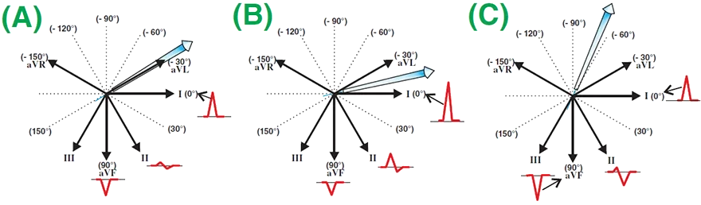
- Nếu vector hướng về góc phần tư trên trái (aVF âm và chuyển đạo I dương)
- Thì dùng chuyển đạo II để xác định trục tim
Trục tim ở góc phần tư trên trái
- (A) QRS hai pha cân bằng ở chuyển đạo II
- Phần dương và phần âm bằng nhau
- Vector vuông góc chính xác với chuyển đạo II (chuyển đạo II ở +60°)
- Đây là tình huống rất hiếm gặp
- Trục tim đúng bằng -30°
- (B) trục tim bình thường
- Ở chuyển đạo II, QRS hai pha dương hơn
- Vì vector hướng một phần VỀ PHÍA chuyển đạo II
- (C) trục lệch trái
- Ở chuyển đạo II, QRS hai pha âm hơn
- Vì vector hướng một phần RA XA chuyển đạo II
Phức bộ QRS hai pha
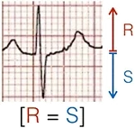
Hai pha cân bằng
- Vector vuông góc với chuyển đạo
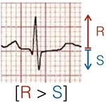
Ưu thế dương
- Vector hướng về phía chuyển đạo
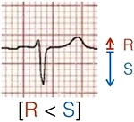
Ưu thế âm
- Vector hướng ra xa chuyển đạo
Trục tim bình thường
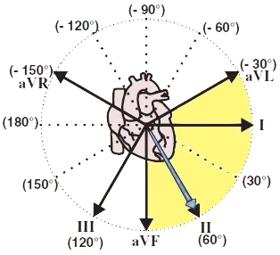
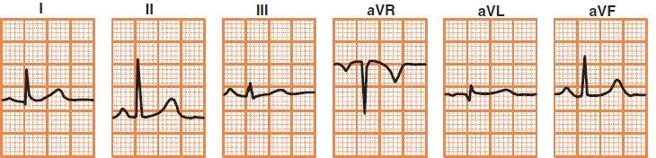
Trục tim bình thường
- Vector hướng về góc phần tư dưới trái
- Chuyển đạo I và aVF đều dương
- QRS hai pha cân bằng ở aVL
- Vector vuông góc với chuyển đạo aVL
- Sóng R cao nhất ở chuyển đạo II
- Trục của vector là +60°
Trục lệch trái
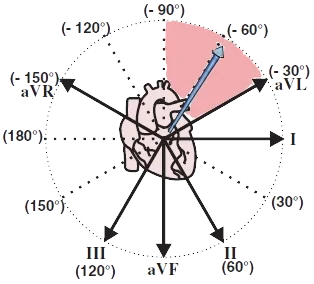
Trục lệch trái
- Vector hướng về góc phần tư trên trái
- Chuyển đạo I dương và aVF âm
- QRS âm ở chuyển đạo II
- Vector hướng ra xa chuyển đạo II
- QRS hai pha cân bằng ở aVR
- Vector vuông góc với chuyển đạo aVR
- Sóng S sâu nhất ở chuyển đạo III
- Trục của vector là -60°
Trục lệch phải

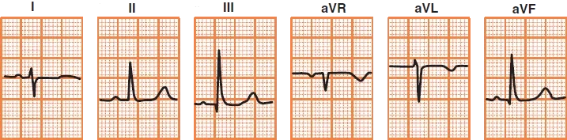
Trục lệch phải
- Vector hướng về góc phần tư dưới phải
- Chuyển đạo I âm và aVF dương
- Chuyển đạo aVR âm
- Vector hướng ra xa chuyển đạo aVR (tức là nằm đâu đó giữa chuyển đạo III và aVF)
- Sóng R ở III > aVF
- Vector gần chuyển đạo III hơn
- Trục của vector là +110°
Lệch trục cực độ
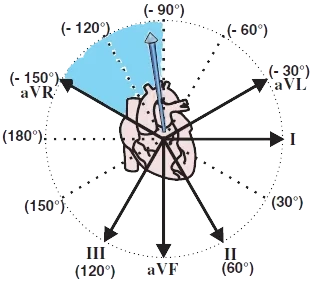
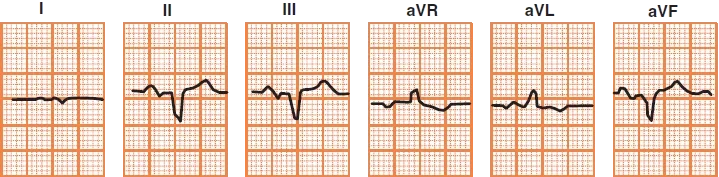
Lệch trục cực độ
- Vector hướng lên trên
- Các chuyển đạo dưới (II, III, aVF) đều âm
- QRS hai pha cân bằng ở chuyển đạo I (âm hơn "một chút")
- Vector gần như vuông góc với chuyển đạo I
- Trục của vector là -100°
3.1.2. TRỤC LỆCH PHẢI (RAD)
Trục tim bình thường và bất thường
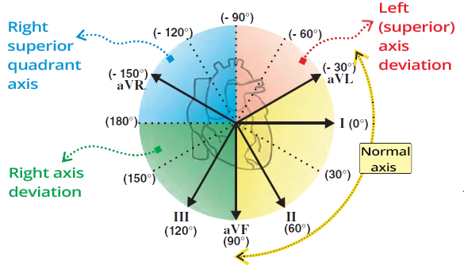
- Trục tim bình thường (trung gian) — vector hướng trong khoảng -30° đến +90° (màu vàng)
- Trục lệch phải — vector hướng trong khoảng +90° đến +180° (màu xanh lá)
- Trục lệch trái — vector hướng trong khoảng -30° đến -90° (màu đỏ)
- Lệch trục cực độ — vector hướng trong khoảng -90° đến +180° (màu xanh dương)
Trục tim bình thường (trung gian)
- Nếu chuyển đạo I và aVF đều dương
- Thì vector hướng về góc phần tư dưới trái (0° đến 90°) và trục bình thường
- Nếu chuyển đạo I dương và aVF âm
- Thì vector hướng về góc phần tư trên trái (0° đến -90°)
- Chuyển đạo aVL (-30°) là ranh giới
- Giữa trục bình thường và trục lệch trái
- Chuyển đạo II vuông góc với chuyển đạo aVL
- Dựa vào QRS hai pha ở chuyển đạo II, xác định được là trục bình thường hay trục lệch trái
ECG và trục lệch phải
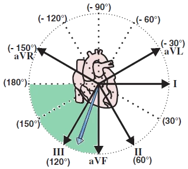
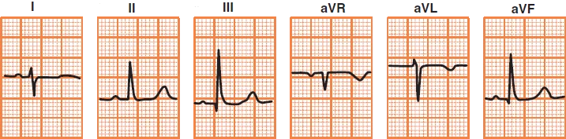
- Vector hướng về góc phần tư dưới phải (màu xanh lá)
- Chuyển đạo I âm
- Chuyển đạo aVF dương
Trục lệch phải
- Vector hướng về góc phần tư dưới phải
- Chuyển đạo I âm và aVF dương
- Chuyển đạo aVR âm
- Vector hướng ra xa chuyển đạo aVR (tức là nằm đâu đó giữa chuyển đạo III và aVF)
- Sóng R ở chuyển đạo III > aVF
- Vector gần chuyển đạo III hơn
- Trục của vector là +110°
Nguyên nhân gây trục lệch phải
- Phì đại thất phải
- Thuyên tắc phổi (quá tải thất phải cấp)
- STEMI thành bên
- Bệnh phổi tắc nghẽn mạn tính (COPD)
- Tăng kali máu
- Thuốc chống trầm cảm ba vòng (ngộ độc)
- Hội chứng WPW
- Tim sang phải (dextrocardia)
- Bloc phân nhánh trái sau
- Ngoại tâm thu thất
- Biến thể bình thường ở trẻ em
- Tư thế tim thẳng đứng (bệnh nhân gầy và cao)
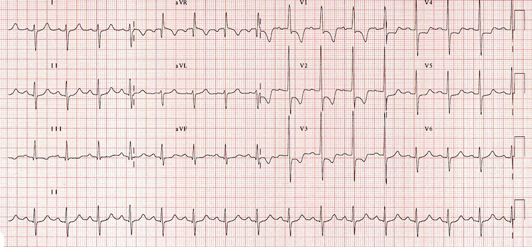
Trục lệch phải
- Trục lệch phải
- Chuyển đạo I âm
- Chuyển đạo aVF dương
- Phì đại thất phải
- Sóng R ưu thế (V1) ≥ 7mm
- Sóng S sâu (V5/6) ≥ 7mm
- Quá tải thất phải (V1-3)
- ST chênh xuống đi dốc xuống
- Sóng T âm
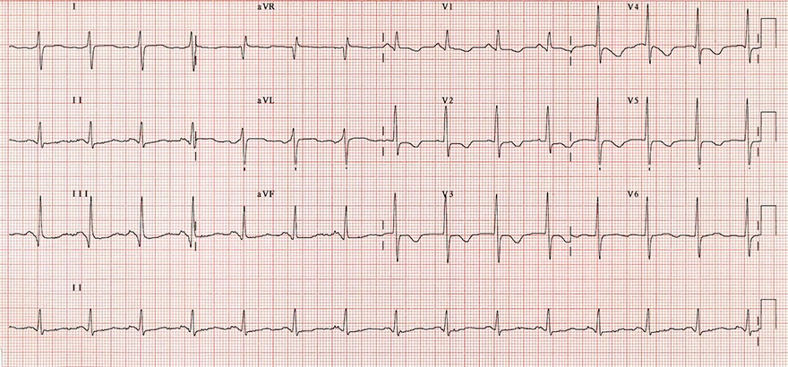
Trục lệch phải
- Trục lệch phải
- Chuyển đạo I âm
- Chuyển đạo aVF dương
- Thuyên tắc phổi cấp
- Sóng T âm (V1-V5)
- Tim xoay theo chiều kim đồng hồ (có sóng S ở V6)
- Bệnh nhân có tăng áp phổi trên siêu âm tim
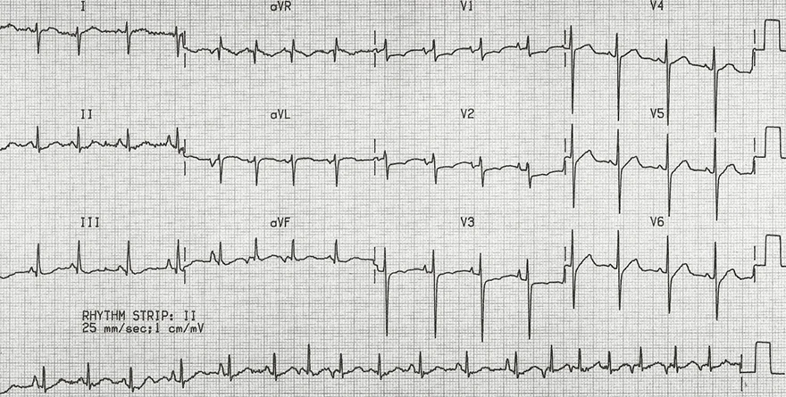
Trục lệch phải
- Trục lệch phải
- Chuyển đạo I âm
- Chuyển đạo aVF dương
- Gánh nặng thất phải (right heart strain)
- Trục lệch phải
- Phì đại thất phải (sóng R ưu thế ở V1 và sóng S sâu ở V6)
- Bệnh nhân có bệnh phổi tắc nghẽn mạn tính (COPD)
- Nhịp nhanh nhĩ đa ổ rất thường gặp trong COPD
- Tần số 120/phút.
- Nhịp tim không đều một cách không đều
- 3 dạng sóng P khác nhau (thấy rõ nhất trên chuyển đạo II ghi liên tục – dải nhịp)
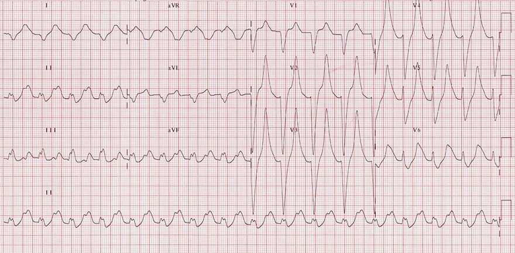
Trục lệch phải
- Trục lệch phải
- Chuyển đạo I âm
- Chuyển đạo aVF dương
- Tăng kali máu (9,2 mmol/L)
- Sóng T cao nhọn
- Trông giống tháp Eiffel
- Nghĩ tới tăng kali máu nếu sóng T cao hơn sóng R (ở gần như tất cả các chuyển đạo)
- Phức bộ QRS giãn rộng (0,2 giây)
- Ở chuyển đạo I và aVR, trông giống sóng hình sin
- Sóng T cao nhọn
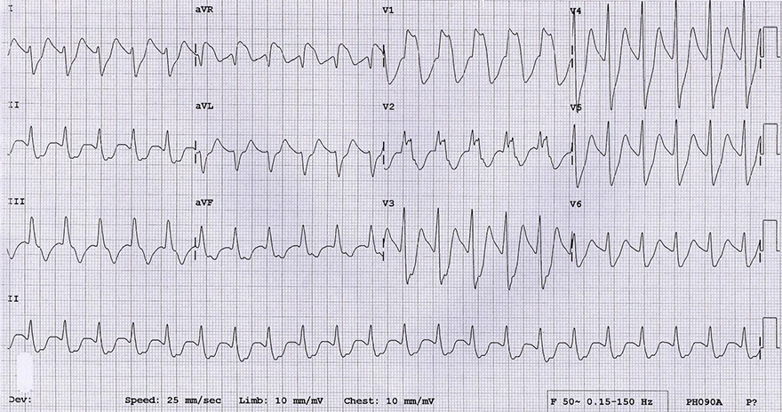
Trục lệch phải
- Trục lệch phải
- Chuyển đạo I âm
- Chuyển đạo aVF dương
- Thuốc chống trầm cảm ba vòng (ngộ độc)
- Nhịp nhanh xoang
- Tần số tim: 140/phút
- QRS giãn rộng cực độ > 0,16 giây (chuyển đạo II)
- Sóng R' tận > 3 mm (aVR)
- Bệnh nhân dùng quá liều nặng thuốc chống trầm cảm ba vòng (Prothiaden)
- Nhịp nhanh xoang
3.1.3. TRỤC LỆCH TRÁI (LAD)
Trục tim bình thường và bất thường
- Trục tim bình thường (trung gian) — vector nằm trong khoảng -30° đến +90° (màu vàng)
- Trục lệch phải — vector nằm trong khoảng +90° đến +180° (màu xanh lá)
- Trục lệch trái — vector nằm trong khoảng -30° đến -90° (màu đỏ)
- Lệch trục cực độ — vector nằm trong khoảng -90° đến +180° (màu xanh dương)
Trục tim bình thường (trung gian)
- Nếu chuyển đạo I và aVF đều dương
- Vector hướng về góc phần tư dưới trái (0° đến 90°) và trục bình thường
- Nếu chuyển đạo I dương và aVF âm
- Vector hướng về góc phần tư trên trái (0° đến -90°)
- Chuyển đạo aVL (-30°) là ranh giới
- Giữa trục bình thường và trục lệch trái
- Chuyển đạo II vuông góc với chuyển đạo aVL
- Dựa vào QRS hai pha ở chuyển đạo II, xác định được trục là bình thường hay lệch trái
ECG và trục lệch trái
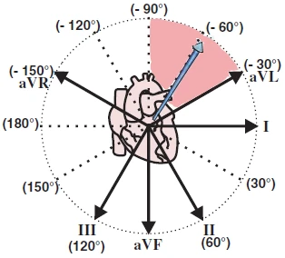
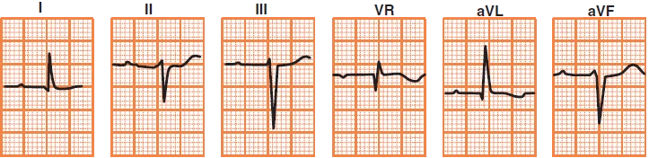
- Vector hướng về góc phần tư trên trái (màu đỏ)
- Chuyển đạo I dương
- Chuyển đạo aVF âm
- Chuyển đạo II ưu thế âm
Trục lệch trái
- Vector hướng về góc phần tư trên trái
- Chuyển đạo I dương và aVF âm
- QRS âm ở chuyển đạo II
- Vector hướng ra xa chuyển đạo II
- QRS hai pha cân bằng ở aVR
- Vector vuông góc với chuyển đạo aVR
- Sóng S sâu nhất ở chuyển đạo III
- Trục của vector là -60°
Nguyên nhân gây trục lệch trái
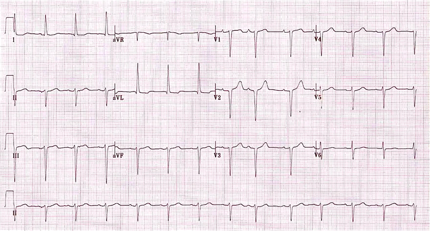
- Bloc phân nhánh trái trước
- Bloc nhánh trái Tawara
- Phì đại thất trái
- STEMI thành dưới
- Ngoại tâm thu thất
- Nhịp máy tạo nhịp
- Hội chứng WPW
Trục lệch trái
- Trục lệch trái
- Chuyển đạo I dương
- Chuyển đạo aVF âm
- Chuyển đạo II ưu thế âm
- Bloc phân nhánh trái trước
- Trục lệch trái
- Phức bộ QRS hẹp < 0,12 giây
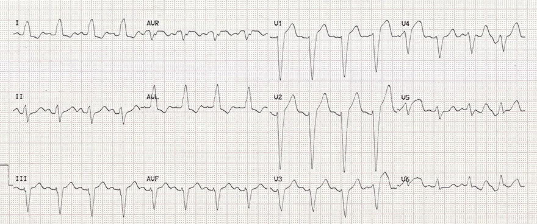
Trục lệch trái
- Trục lệch trái
- Chuyển đạo I dương
- Chuyển đạo aVF âm
- Chuyển đạo II ưu thế âm
- Bloc nhánh trái Tawara
- Phức bộ QRS giãn rộng > 0,12 giây
- Sóng S sâu (V1)
- Sóng R ưu thế (V6)
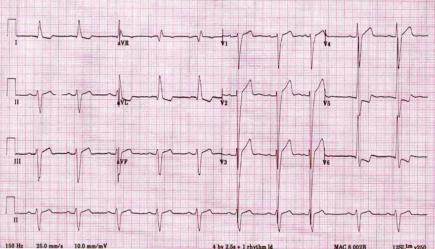
Trục lệch trái
- Trục lệch trái
- Chuyển đạo I dương
- Chuyển đạo aVF âm
- Chuyển đạo II ưu thế âm
- Phì đại thất trái
- Sóng S và sóng R khổng lồ ở các chuyển đạo trước tim, lan sang cả các chuyển đạo kế cận
- Chỉ số Sokolow dương tính
- S(V1/2) + R(V5/6) ≥ 35mm
- Thời gian sóng R kéo dài (V6) ≥ 50ms
- Chẩn đoán xác định dựa vào siêu âm tim
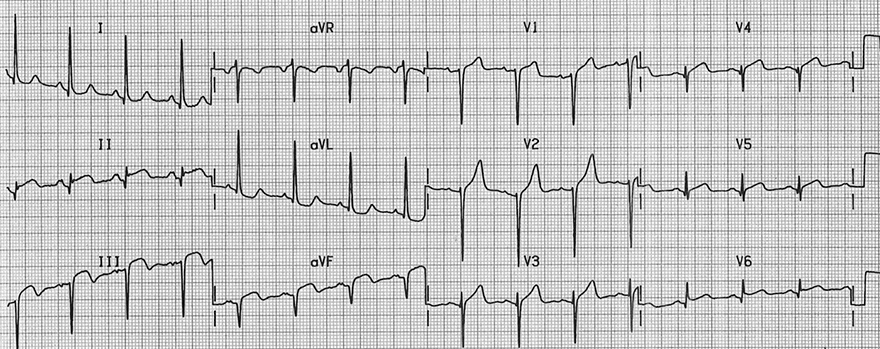
Trục lệch trái
- Trục lệch trái
- Chuyển đạo I dương
- Chuyển đạo aVF âm
- Chuyển đạo II ưu thế âm
- Nhồi máu STEMI thành dưới bán cấp
- Sóng Q bệnh lý (III, aVF)
- Sóng T đảo ngược (II, aVF)
- ST chênh lên (II, III, aVF), V5, V6
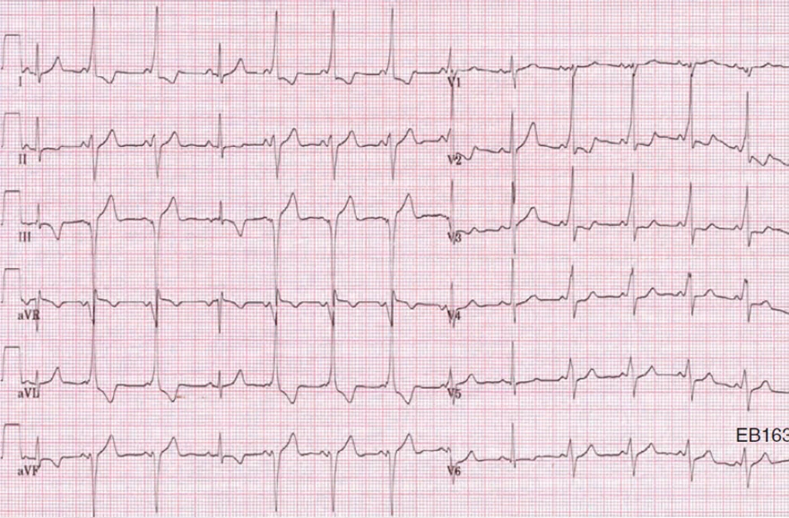
Trục lệch trái
- Trục lệch trái
- Chuyển đạo I dương
- Chuyển đạo aVF âm
- Chuyển đạo II ưu thế âm
- Hội chứng WPW type B (từng lúc)
- Sóng delta
- QRS âm ở V1 (bó Kent nằm ở nhĩ phải)
3.1.4. LỆCH TRỤC CỰC ĐỘ
Trục tim bình thường và bất thường
- Trục tim bình thường (trung gian) — vector hướng trong khoảng -30° đến +90° (màu vàng)
- Trục lệch phải — vector hướng trong khoảng +90° đến +180° (màu xanh lá)
- Trục lệch trái — vector hướng trong khoảng -30° đến -90° (màu đỏ)
- Lệch trục cực độ — vector hướng trong khoảng -90° đến +180° (màu xanh dương)
Trục tim bình thường (trung gian)
- Nếu các chuyển đạo (I, aVF) dương
- Thì vector hướng về góc phần tư dưới trái (0° đến 90°) và trục bình thường
- Nếu chuyển đạo I dương và aVF âm
- Thì vector hướng về góc phần tư trên trái (0° đến -90°)
- Chuyển đạo aVL (-30°) là ranh giới
- Giữa trục bình thường và trục lệch trái
- Chuyển đạo II vuông góc với chuyển đạo aVL
- Dựa vào QRS hai pha ở chuyển đạo II, xác định được là trục bình thường hay trục lệch trái
ECG và lệch trục cực độ
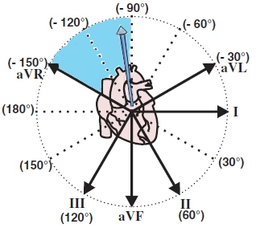
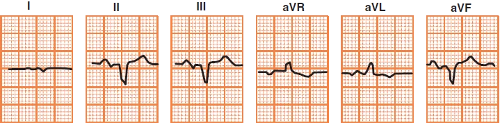
- Vector hướng về góc phần tư trên phải (màu xanh dương)
- Các chuyển đạo dưới (II, III, aVF) đều âm
Lệch trục cực độ
- Vector hướng lên trên
- Các chuyển đạo dưới (II, III, aVF) đều âm
- QRS hai pha cân bằng ở chuyển đạo I (âm hơn "một chút")
- Vector gần như vuông góc với chuyển đạo I
- Trục của vector là -100°
Nguyên nhân gây lệch trục cực độ
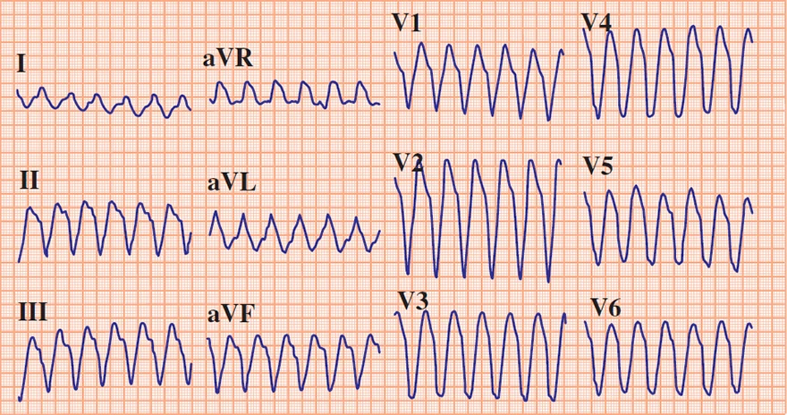
- Nhịp nhanh thất
- Tăng kali máu
- Phì đại thất phải nặng
Lệch trục cực độ
- Lệch trục cực độ
- Các chuyển đạo dưới (II, III, aVF) đều âm
- Nhịp nhanh thất
- Phức bộ QRS giãn rộng > 0,12 giây
- Lệch trục cực độ
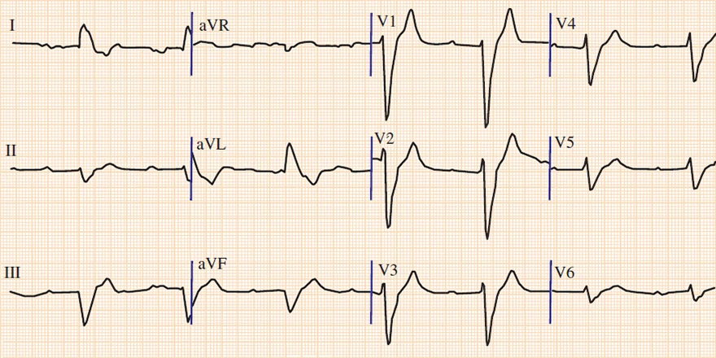
Lệch trục cực độ
- Lệch trục cực độ
- Các chuyển đạo dưới (II, III, aVF) đều âm
- Tăng kali máu (7,2 mmol/l)
- Sóng T cao, nhọn
- Trông giống tháp Eiffel
- Nghĩ tới tăng kali máu bất cứ khi nào sóng T cao hơn sóng R (các chuyển đạo V1-4, II, III, aVR, aVF)
- Phức bộ QRS giãn rộng (0,28 giây)
- Bloc nhĩ thất độ I
- Sau khi điều chỉnh tăng kali máu,
ECG trở về nhịp xoang bình thường
- Sóng T cao, nhọn
3.2. VÙNG CHUYỂN TIẾP
Trục điện học của các chuyển đạo ECG
- Mỗi chuyển đạo ECG có trục điện học riêng
- Nằm giữa cực trung tâm (-) và điện cực bề mặt (+)
- Mỗi vector điện học của tim đều chiếu lên trục điện học của các chuyển đạo ECG
Sóng lệch dương và sóng lệch âm trên ECG
- Vector điện học của tim
- Luôn phải chiếu lên trục điện học của chuyển đạo ECG
- Sóng lệch dương trên ECG xuất hiện
- Khi vector hướng về phía điện cực bề mặt (+)
- Sóng lệch âm trên ECG xuất hiện
- Khi vector hướng ra xa điện cực bề mặt (+)
Sóng lệch hai pha trên ECG
- Cơ tim khử cực dần dần
- Vector điện học vì thế quay quanh một điểm
- Ví dụ khử cực tâm thất
- (vector quay quanh cực trung tâm)
- Chuyển đạo ECG ghi lại các vector theo trình tự và tạo ra đường cong ECG
- Vector thứ 1 hướng ra xa điện cực (+)
- Vector thứ 2 vuông góc với điện cực (+)
- Vector thứ 3 hướng về phía điện cực (+)
- Sóng lệch hai pha trên ECG dần dần được hình thành
Các chuyển đạo trước tim

- Các chuyển đạo trước tim (V1-V6)
- Hướng về tim ở mặt phẳng ngang
- Vector tim chính (VH)
- Hướng thẳng nhất là về phía chuyển đạo V6
- Giữa vector và V6 là hai phổi (chất cách điện)
- Sóng R ưu thế ở V5
- Hướng ra xa chuyển đạo V1
- Nơi sẽ có sóng S âm
- Hướng thẳng nhất là về phía chuyển đạo V6
- Ở các chuyển đạo trước tim có hiện tượng tiến triển của sóng R
- Biên độ sóng R tăng dần từ chuyển đạo V1 đến V4-5
- Vùng chuyển tiếp
- Nếu vector chính (VM) vuông góc với chuyển đạo trước tim
- Thì ở chuyển đạo đó xuất hiện phức bộ QRS hai pha (R=S)
- Đó được gọi là vùng chuyển tiếp
- Hình cho thấy vùng chuyển tiếp ở V3
Sự xoay của tim và vùng chuyển tiếp
- Vùng chuyển tiếp
- Cho biết sự xoay của tim quanh trục dọc
- Tương tự như xoay đầu (phải - trái)
ECG và vùng chuyển tiếp
Vùng chuyển tiếp
- Chỉ được đánh giá ở các chuyển đạo trước tim (V1-V6)
- Sóng RS (sóng R = sóng S)
- Thường gặp nhất ở chuyển đạo V3
Sự xoay tim bình thường
Sự xoay tim bình thường
- Vùng chuyển tiếp ở V3-V4
- Đôi khi được coi là biến thể bình thường:
- Vùng chuyển tiếp sớm ở V2 (early transition zone)
- Vùng chuyển tiếp muộn ở V5 (delayed/late transition zone)
Tim xoay ngược chiều kim đồng hồ
Xoay ngược chiều kim đồng hồ (CCW), vùng chuyển tiếp sớm
Tim xoay ngược chiều kim đồng hồ
- Vector tim chính xoay về phía thất phải
- Ngược chiều kim đồng hồ
- Vùng chuyển tiếp ở V1-V2
- Đôi khi được coi là biến thể bình thường:
- Vùng chuyển tiếp sớm ở V2 (early transition zone)
- Các nguyên nhân thường gặp nhất:
- Phì đại thất phải
- Hội chứng WPW
- Nhồi máu cơ tim thành dưới
Tim xoay theo chiều kim đồng hồ
Xoay theo chiều kim đồng hồ (CW), vùng chuyển tiếp muộn (late transition zone)
Tim xoay theo chiều kim đồng hồ
- Vector tim chính xoay về phía thất trái
- Theo chiều kim đồng hồ
- Vùng chuyển tiếp ở V5-V6
- Đôi khi được coi là biến thể bình thường:
- Vùng chuyển tiếp muộn ở V5 (delayed/late transition zone)
- Các nguyên nhân thường gặp nhất:
- Phì đại thất trái
- Khí phế thũng
- Thuyên tắc phổi (giãn thất phải)
Sự xoay tim bình thường và nhịp xoang
- Nhịp xoang
- Tần số tim 75/phút.
- Vùng chuyển tiếp V3 (sóng R = sóng S)
- Điều này biểu thị sự xoay tim bình thường
Tim xoay ngược chiều kim đồng hồ và loạn sản thất phải gây loạn nhịp
- Loạn sản thất phải gây loạn nhịp
- Sóng epsilon (ở tất cả các chuyển đạo ECG)
- Trục lệch phải > +110°
- Vùng chuyển tiếp V1
- Vùng chuyển tiếp nằm ở V1
- Tim xoay ngược chiều kim đồng hồ (về phía thất phải)
Tim xoay theo chiều kim đồng hồ và phì đại thất trái
- Phì đại thất trái
- Chỉ số Sokolow dương tính: S (V2) + R (V6) > 35mm
- Quá tải thất trái: ST chênh xuống và sóng T âm (V5-V6, I, aVL)
- Vùng chuyển tiếp V4/V5
- Vùng chuyển tiếp nằm giữa V4 và V5
- Tim xoay theo chiều kim đồng hồ (về phía thất trái)
3.3. TIM SANG PHẢI (DEXTROCARDIA)
Tim sang phải và phim X-quang
- Tim sang trái (levocardia)
- Là vị trí sinh lý của tim, với mỏm tim hướng sang trái
- Tim lệch phải (dextroposition)
- Toàn bộ quả tim bị đẩy lệch sang phải trong lồng ngực
- Mỏm tim vẫn hướng sang trái
- Tim sang phải (dextrocardia)
- Là một dị tật phát triển bẩm sinh của tim
- Vị trí đáy tim chỉ dịch chuyển rất ít
- Mỏm tim hướng sang phải
- Vector điện chính cũng hướng sang phải
- X-quang ngực là đủ để chẩn đoán tim sang phải
- Không cần đến ECG
Vector tim chính
- Trong tim sang phải, tim hướng sang phải
- Vector điện chính hướng sang phải
- Vector hướng ra xa các chuyển đạo bên trái (I, aVL, V5-V6)
- Các thay đổi đặc trưng xuất hiện ở
- Các chuyển đạo chi (I, II, III, aVF, aVL, aVF)
- Các chuyển đạo trước tim (V1-V6)
ECG và tiến triển sóng R kém

- Trong tim sang trái
- Vector chính hướng về V5-V6
- Sóng R tăng dần từ V1 đến V5
- Trong tim sang phải
- Vector chính hướng ra xa V5-V6
- Sóng R không tăng dần từ V1 đến V5
- Tiến triển sóng R kém được định nghĩa là:
- Sóng R ở V3 < 4mm
- Sóng R không tăng dần từ V1 đến V5
- Hoặc sóng R cụt (amputated R waves)
- Không có sóng R (V1-V3)
- Sóng R ở V3 < 4mm
ECG và tim sang phải
- Lệch trục cực độ sang phải
- Sóng R ưu thế ở aVR (sóng P, QRS và T đều dương)
- Sóng S ưu thế ở chuyển đạo I (sóng P, QRS và T đều âm)
- Tiến triển sóng R kém (sóng R không tăng dần từ V1 đến V5)
Đặt điện cực trước tim đối xứng gương
- Khi nghi ngờ tim sang phải (do lệch trục cực độ sang phải)
- Hãy đặt các điện cực trước tim đối xứng gương (V1R-V6R)
- Nếu ở các chuyển đạo đối xứng gương xuất hiện tiến triển sóng R bình thường
- Thì điều đó chỉ ra tim sang phải
Đảo điện cực tay so với tim sang phải
- Hình ảnh ECG giống tim sang phải ở các chuyển đạo chi (trên bệnh nhân tim sang trái)
- Xảy ra nếu bạn hoán đổi các điện cực chi ở hai tay (tay trái đổi cho tay phải)
- Đảo điện cực chi ở hai tay
- Tuy nhiên vẫn bảo tồn tiến triển sóng R
- Vì các chuyển đạo trước tim còn nguyên và vector vẫn hướng về các chuyển đạo V5-V6
Chẩn đoán phân biệt: tim sang phải so với đảo điện cực tay
- Nếu chuyển đạo I âm hoàn toàn (P, QRS, T)
- Phân biệt dựa vào tiến triển sóng R:
- Đảo điện cực tay (tiến triển sóng R bình thường)
- Tim sang phải (tiến triển sóng R kém)
Tim sang phải
- Lệch trục cực độ sang phải
- Sóng R ưu thế ở aVR
- Sóng S ưu thế ở chuyển đạo I
- Tiến triển sóng R kém
- Sóng R từ V1 đến V6 thậm chí có thể giảm dần
Đảo điện cực tay
- Lệch trục cực độ sang phải
- Sóng R ưu thế ở aVR
- Sóng S ưu thế ở chuyển đạo I
- Tiến triển sóng R
- Sóng R tăng dần từ V1 đến V6
Tim sang phải
- Lệch trục cực độ sang phải
- Sóng R ưu thế ở aVR (QRS dương ở aVR)
- Sóng S ưu thế ở chuyển đạo I (QRS âm ở chuyển đạo I)
- Tiến triển sóng R kém (sóng R từ V1 đến V5 không tăng dần)
- Sóng R ở V3 < 4mm
Đảo điện cực tay
- Lệch trục cực độ sang phải
- Sóng R ưu thế ở aVR
- Sóng S ưu thế ở chuyển đạo I
- Tiến triển sóng R
- Sóng R tăng dần từ V1 đến V6
- Bệnh nhân bị đảo điện cực chi (tay trái/tay phải)

Điện cực tay đặt đúng vị trí
- Đây là ECG của bệnh nhân ở hình trước
- Các điện cực ở hai tay nay đã được đặt đúng vị trí
- Lưu ý sự bình thường hoá của các phức bộ QRS ở các chuyển đạo chi
Tim sang phải và nhồi máu cơ tim thành dưới cũ
- Nhồi máu cơ tim thành dưới cũ
- Sóng Q bệnh lý (II, III, aVF) - mũi tên đỏ
- Sóng T âm (II, III, aVF) - mũi tên xanh dương
- Tim sang phải
- Sóng R ưu thế ở aVR - mũi tên xanh lá
- Sóng S ưu thế ở chuyển đạo I - mũi tên tím
- Tiến triển sóng R giảm - mũi tên nâu vàng
- Biên độ sóng R từ V1 đến V6 giảm dần
Các chuyển đạo trước tim bên phải (V1R-V6R)
- Đây là ECG của bệnh nhân ở hình trước
- Các chuyển đạo trước tim được đặt đối xứng gương sang bên phải
- Chúng được ký hiệu là (V1R-V6R)
- ECG cho thấy tiến triển sóng R từ V1 đến V6
- Các chuyển đạo chi vẫn giữ nguyên
- ECG cho thấy tiến triển sóng R (mũi tên nâu vàng)
- Vì vector hướng sang phải về phía các chuyển đạo VR5-VR6
Nguồn tài liệu (Sources)
Nguồn: ecgbook.com
- ECG from Basics to Essentials Step by Step
- Litfl.com
- Ecgwaves.com
- Metealpaslan.com
- Medmastery.com
- Uptodate.com
- Ecgpedia.org
- Wikipedia.org
- Strong Medicine
- Understanding Pacemakers